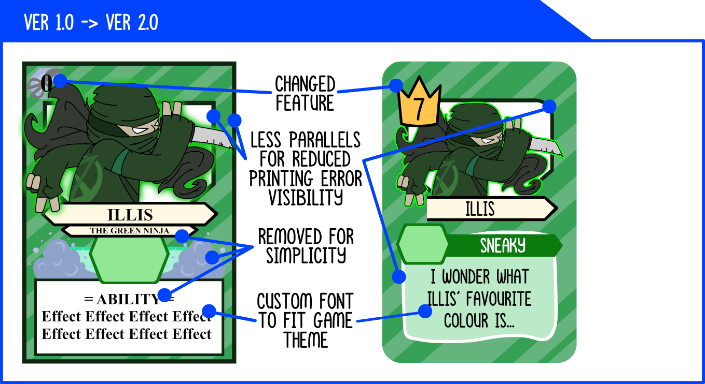
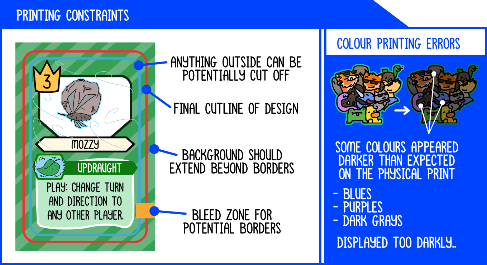

WESLEY TRAN
WESLEY TRAN
If you can please orient your device to portrait or find a larger screen to view my e-portfolio! You won't be disappointed!
WESLEY TRAN
Hello! I’ve wanted to share with you a personal project that took me a while to complete over the course of COVID-19!
The main theme behind this project was using my imagination and enjoyment of art in some form or shape- I’ve always liked the idea of physical projects as a means for entertainment and expression. The game: Reputation in short- a little like UNO with extra rules and more chaos, using bright colours and expressive, fun art!
The purpose of this blogpost is reflecting on the processes of designing and developing this card game- the difficulties and successes of working independently on a passion project!
The inspiration behind the card game Reputation, was because I’ve always wanted to use some of my hobbyist artworks into a more physical and tangible product- and being a person who loves interacting with people, and bringing joy and entertainment with me, a card game was a fantastic way to do such! A way to use my talents, to spread some joy anywhere.
I brainstormed many different ideas playtesting and theorising these ideas with my family and friends to see where the particular pain points and enjoyment was for the players were.
This caused too much of a headache to mentally work, we always had to ask ourselves “the card is a scissors card… I need to play a rock card…” Which were the pain points that made the game sluggish and mentally exhausting.
Similar to the above, there we didn't want our players to keep track of something and just play on the go.
Built upon the base of UNO's gameplay with the addition of "levels" where you can
What worked for me was building upon the base of UNO’s gameplay.
I essentially viewed the “match the colour rule” and linked it towards the idea of “teams” or “clans”- where each was essentially a team. These teams (blue, red, green) are led by their members who have more or less “power”- coining the term “reputation”.
In order to change the colour- you essentially had to beat the last card’s “reputation”- while you could freely play the same team whenever.
Initial designs started with a simple slate where art and text was to be inserted.
You can see from the draft to the first iteration that I wanted there to be a lot of space for art and text- with the characters’ titles, ability names and added flair.
After playtesting with the rock-paper-scissors format, there were a lot of glaring gameplay issues, as well as a few comments on the visual clutter of the cards. So there were many changes made for the best of the cards. These helped reinforce the cartoon-ish and chaotic theme of the game, as well as helping some external constraints- such as reducing the noticeability of printing errors.

Printing cards are never accurately cut- so in designining these cards, it was highly advisable to remove any "borders", and parallel lines would make the cutting errors more noticeable- my solution around this was shrinking down the elements away from the edges, as well as changing the straight-edged borders of some panels to be curved.
In order to playtest the card game, I had to develop prototypes, which took a long process to make with small little A4 cutouts of cards that I played with family and friends. It was hard to engage the audience with flimsy little pieces of papers, but after testing a few times, I could really see the cracks that were forming during our time playing.
The company that I ended up developing my cards with, which highly supports the development, production and selling of many different type of physical tabletop games is https://www.thegamecrafter.com/
Printing cards had some limitations: border cutting errors, colour printing inequalities, card finishes. But surprisingly they came out very well with minor issues.
Admittedly moving forward I should’ve used the initial stage of printing to limit test the printing capabilities of the company to limit errors.

I aimed for the project to have minimal time in learning the core concept of the game, whilst at the same time, keeping the time spent in the game engaging (based on frequency of events) to ensure that the game is easy to pick up and fun. Finding the balance required altering the amount of special and normal cards- leading to duplicate copies of cards.
I’m really proud about the product I’ve designed, tested, prototyped and shown to both my family and friends. I’ve learnt through this project that the best way to scope out if something works is through prototyping and playtesting.
It’s opened up a lot of fields of what I’m interested in- especially in the realm of player engagement and visual designs. This project really made me consider my possible move to a career such as UI or UX design- where I can hone in on designing an experience.